040 DE - BB 63000 - 63400 - 63500 - 64600
Locomotives Diesel-électriques construites par Brissonneau et Lotz et très courantes à l'exportation dans de nombreux pays. Elles sont présentes dans les effectifs SNCF sous la forme de deux séries principales qui se distinguent par leur moteur.
Les 040 DE, puis 63000
Les 040 DE 1 à 108, plus tard ré-immatriculées BB 63001 à 63108, forment une famille de locomotives thermiques
de faible puissance destinées aux tâches de manœuvres ou de desserte locale. Elles sont pourvues d'une chaine de traction
Diesel-électrique mue par un groupe électrogène formé d'un moteur Diesel Sulzer 6 LDA 22,
à six cylindres en ligne et suralimenté, de 600 cv (440 kW) entraînant une génératrice à courant continu qui alimente quatre moteurs électriques installés dans les bogies. La puissance nominale UIC délivrée à la jante n'est cependant que de 355 kW. Les premières machines sont mises en service en 1953 et la production démarre réellement en 1954 jusque l'été 1957.
Une seconde sous-série sort d'usine à partir de l'hiver 1957 jusqu'au printemps 1959. Les 040 DE 109 à 158 disposent d'un moteur dont le turbo a été amélioré. Le régime nominal passe de 900 à 950 tr/mn et la puissance du moteur Sulzer est porté à 725 cv (Puissance nominale UIC : 435 kW). Durant l'année 1961, la série est complétée par les 159 à 195 qui sortent probablement d'usine avec la nouvelle immatriculation BB 63000 qui sera officiellement en vigueur au 1er janvier 1962.
Enfin deux derniers lots de 45 et 10 machines sont mises en service en 1963 (BB 63196 à 63240) puis durant l'été 1964 (BB 63241 à 63250).
Le moteur gagne encore en puissance avec 750 cv et la puissance nominale UIC de 445 kW se rapproche des BB 63500 à moteur MGO.
Les 040 DE 500, puis 63500
Les 040 DE 400 et les 040 DE 500 sont des locomotives similaires à l'exception du moteur Diesel qui est un SACM MGO V12 turbocompressé de 825 cv (609 kW, puissance nominale UIC : 450 kW),
de la même famille que ceux qui équipent les RGP1 et X2800.
Techniquement, 040 DE 400 et 040 DE 500 sont identiques à l'exception de roues plus grandes sur les "400". Ces dernières étaient financées en leasing par le groupe Eurofima, ce qui a justifié une numérotation séparée.
Les livraisons des 040 DE 500 commencent en 1956 et se poursuivent sans discontinuation jusqu'à la 040 DE 720 en octobre 1959. Puis les 040 DE 401 à 423 sont livrées presque d'un bloc en décembre 1959 et janvier 1960. Les 040 DE 721 à 770 sont ensuite mises en service durant l'année 1960.
Ces machines ont été ré-immatriculées
BB 63401 à 63423 et 63501 à 63770 au 1er janvier 1962. La série des BB 63500, toujours en construction lors des renumérotations, fut portée jusqu'au numéro 64080, livrée en juin 1971 et provoquant le renommage
des CC 64000 en CC 65500.
Carrière et transformations
Elles sont progressivement remplacées par des locotracteurs, machines de remonte électriques ou par les BB 60000.
Toutes les BB 63000 ont été radiées des effectifs de la SNCF avec la radiation des ultimes machines en 2011. Elles furent en partie transformées en TBB 64800, revendues à VFLI ou à des opérateurs industriels. Enfin, quelques exemplaires sont confiés à des chemins de fer touristiques.
Les BB 63500 sont en partie modernisés en BB 64700 ou en BB 64600, ou également revendues à VFLI ou des chemins de fer touristiques. Plusieurs machines déclassées œuvrent dans des établissements SNCF en "LOCMA".
Les 64600
Pas tout à fait une transformation, les 64600 sont des 63400/63500 mises à jour au niveau des équipements de sécurité (Distributeurs de frein, Veille automatique, signalisation (KVB, DAAT, RSO), radio sol-train). Le moteur MGO reste inchangé.
Exportation et réseaux privés
Brissonneau et Lotz a vendu de nombreuses machines en exportation et directement à des chemins de fers privés industriels. On peut citer pour les machines à moteur Sulzer, 12 machines pour les Ferrocarriles Nacionales de Cuba, 7 pour les Mines Domaniales de Potasse d'Alsace, 2 pour Usinor. Également, 10 machines à écartement Ibérique (1668 mm) pour la RENFE (10701 à 10710 renumérotées plus tard 307-001 à 307-010).
La motorisation MGO a connu un plus grand succès avec des versions atmosphérique 600 cv (99 machines de type "040 DE 600" pour les HBNPC - Houillères du Bassin du Nord Pas-de-Calais, 2 pour St Gobain) ou turbocompressé. La plupart de ces machines développent 825 cv comme les BB 63500, mais des versions 850 et 925 cv furent produites.
825 cv :
10 machines HBNPC (n°070 à 079), 8 pour les Chemins de Fer Luxembourgeois (n°851-858), 25 à écartement Ibérique pour les Comboios de Portugal (n°1201-1225), 49 à écartement large indien (1676 mm) pour les chemins de fer d'état Chiliens (n°7101-7149) et 30 autres machines Cubaines. 104 machines de la série 642 furent construites sous licence par Đuro Đaković pour les chemins de fer Yougoslaves JZ (642-001 à 642-036, 642-137 à 642-203 et 642-301).
850 cv : 10 machines pour la MIFERMA (société des Mines de fer de Mauritanie).
925 cv : 13 locomotives pour les CFL (n°901-913) et 51 machines de la série 643 JZ (n° 643-001 à 643-051) dont les 22 premières furent construites par Brissonneau et Lotz et le reste sous licence.
Enfin, 5 locomotives ont reçu un MGO V16 produisant 1200 cv. Quatre machines pour la RDT13 (Régie Départementale des Bouches du Rhône) (n°1201 à 1204) et une pour la mine de Droitaumont qui officia sous les couleurs d'Unimétal, Lorfonte et Sollac avec le numéro "BL1".
Reventes et modifications
En raison de l'embargo sur Cuba, certaines machines Cubaines ont été converties en locomotives purement électriques avec un pantographe installé en toiture.
Le démantèlement des bassins houillers et les restructurations, fusions ou reventes d'entreprises de charbonnages, sidérurgiques ou de travaux font que les 040 DE privées ont beaucoup changé de propriétaires, de nom et de livrées. Un inventaire exhaustif est assez difficile, d'autant plus que la SNCF a revendu un nombre important de ses machines qui côtoient parfois d'anciennes locomotives des Houillères.
Les locomotives HBNPC ont été revendues entre 1969 et 1992. Les CFTA ont acheté une trentaine de machines 600 cv et ont remis en service 5 BB 4500 et 18 BB 4800 qui, après ajout d'un turbocompresseur, développent 825 cv. La RATP possèdent 10 machines, dont trois à 825 cv. Parmi les autres acquéreurs, on peut citer plusieurs chemins de fer miniers : Houillères de Campine NVKS (Naamloze Vennootschap van Kempense Steenkoolen) (14), les Houillères du Bassin de Lorraine (12 locos 600 cv), la Cokerie de Drocourt (10), les Mines Domaniales de Potasse d'Alsace ; des industriels (SAD Florange) ou des entreprises de travaux (Déhé, Drouard, Desquenne et Giral) qui, selon les regroupements d'entreprises sont devenues Colas ou ETF.
Une des machines des NVKS, l'ex-n°29 des HBNPC, fut reconditionnée par CFD Locorem en 1991 et entra à l'inventaire des SBB-CFF sous le numéro Em 4/4 1110 en location jusque mai 1997. Elle est rachetée par l'entreprise de travaux Scheuchzer à Lausanne et porte désormais le sobriquet de Gazelle.
A l'issue du conflit dans les Balkans, les machines ex-Yougoslaves ont été réparties entre les Chemins de Fer Croates (HZ), Slovènes (SZ), Serbes (ZS), Macédoine (MZ), Bosniaques (ZFBH, ZRS) et Monténégrins (ZCG).
Vers 2007, une grande partie du parc Luxembourgeois fut racheté par la RDT13. Dans le même temps, la régie de Bouches-du-Rhône reprenait l'exploitation du réseau départemental de l'Hérault. La 1201 fut repeinte dans la livrée orange de ce réseau.
Seconde vie des machines ex-SNCF
Les machines HBL sont par la suite entrées dans le giron de VFLI et mélangées à des BB 63000 et 63500 rachetées d'occasion. VFLI a lancé un important programme de modernisation (remotorisation avec un bloc Iveco) : les BB 400.
Quelques données techniques
Constructeur : Brissonneau et Lotz
Phares écartés sur les BB 63001 à 63158, 63501 à 63690, recentrés sur les suivantes. On peut cependant voir que la BB 63895, rebaptisée 040 DE 895 adopte la disposition écartée pour mieux coller à la livrée années 1950 qu'elle a reçu.
Particularités : Aptitude UM : BB 63721 à 750, 63811 à 885, 63981 à 64020.
Aptitude chauffage de train 1500V : BB 63896, 901, 902, 906. Pour acheminer des voitures directes entre Paris-Lyon et Paris-Nord par la petite ceinture.
Depuis 1989, troisième phare sur les machines qui se rendaient en Allemagne : 63728, 730, 829, 870, 873, 874, 875, 876, 877, 878, 879, 881, 883, 884 et 999
Pour plus d'info :
Les fiches BB 63000, BB 63400, BB 63500 et BB 64600 sur Wikipédia
Toujours sur Wikipédia, une fiche plus générale sur les machines Brissonneau et Lotz.
L'inventaire des BB 63000, BB 63400/63500 et BB 64600 sur Trains du Sud-Ouest
Reportage sur les 1201 à 1204 de la régie des Bouches-du-Rhône sur EspaceTrain.
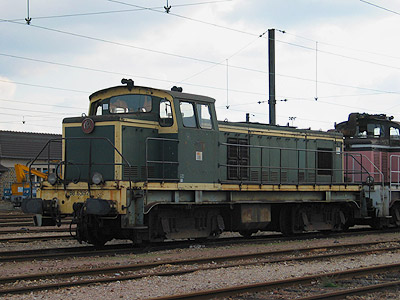
La BB 63192, radiée, à Juvisy (07/03/2004)
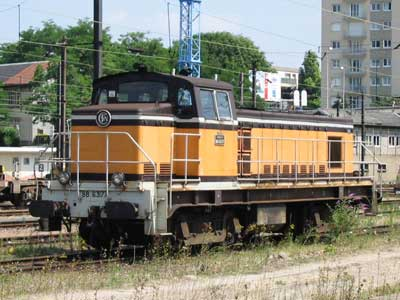
La BB 63177 à Noisy le Sec (18/07/2002)
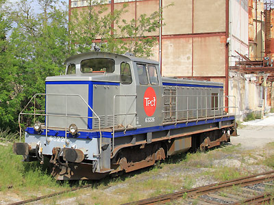
La BB 63226 en livrée TER désormais au TPCF (23/05/2015)
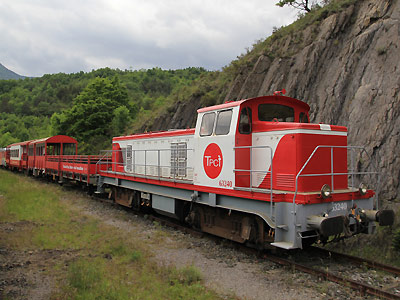
Egalement au TPCF et repeinte, la BB 63240 stationne à Axat (23/05/2015)
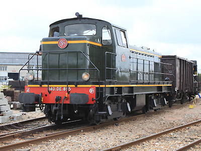
La BB 63895 du CFTLP immatriculée fictivement 040 DE 895,
Les Aubrais (20/09/2011)
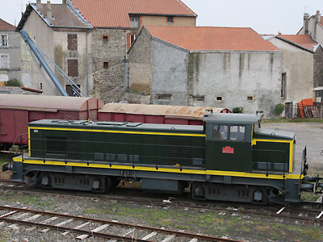
La BB 63705 du CFHF repeinte en vert, Craponne (26/09/2008)
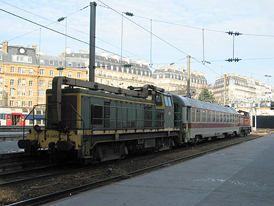
La BB 64056 en compagnie de la BB 63801 et la voiture Su 196 d'inspection
de la radio sol-train à Paris St Lazare (24/02/2004)
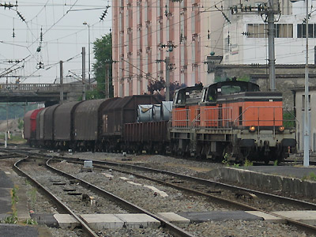
La BB 63744 mène une UM à Reims (04/06/2004)
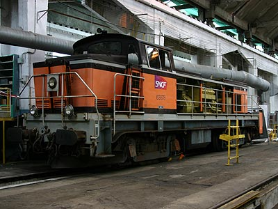
La BB 63878 "trois feux" en maintenance à Lens (11/06/2005)
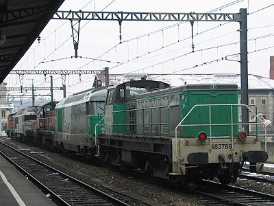
La BB 63789 Fret en queue d'un train de machines à Lyon Perrache (02/02/2003)
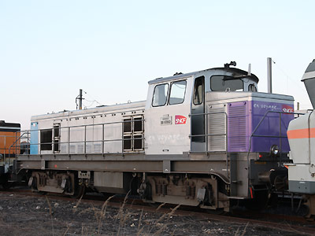
La BB 63962 "En Voyage" à Villeneuve (24/04/2010)
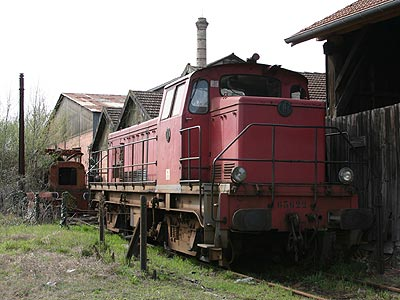
Revendue à VFL, la BB 63622, ici à Morcenx, roule depuis
pour VFLI (28/03/2005)
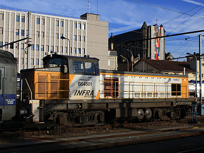
La BB 64601 ex-63617 dans la livrée proto Infra à Limoges (21/09/2011)
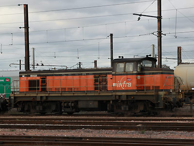
La BB 64625 ex-63829 en livrée Arzens aux Aubrais. De ce côté, on remarque les nouveaux distributeurs de frein modérables au desserrage. (28/03/2015)
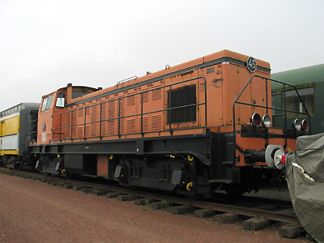
Proche cousine des 63500 mais sans turbo, la n°45 HBNPC
préservée au CMCF de Oignies (27/09/2003)
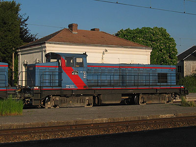
Ex-HBNPC, la BB 4815 des CFTA a reçu un turbo (16/05/2004)
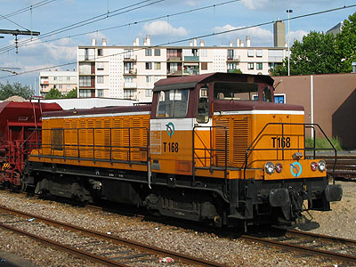
Ancienne machine HBNPC, le T168 de la RATP est mû par un
MGO turbo de 825cv (Nanterre, 06/06/2003)